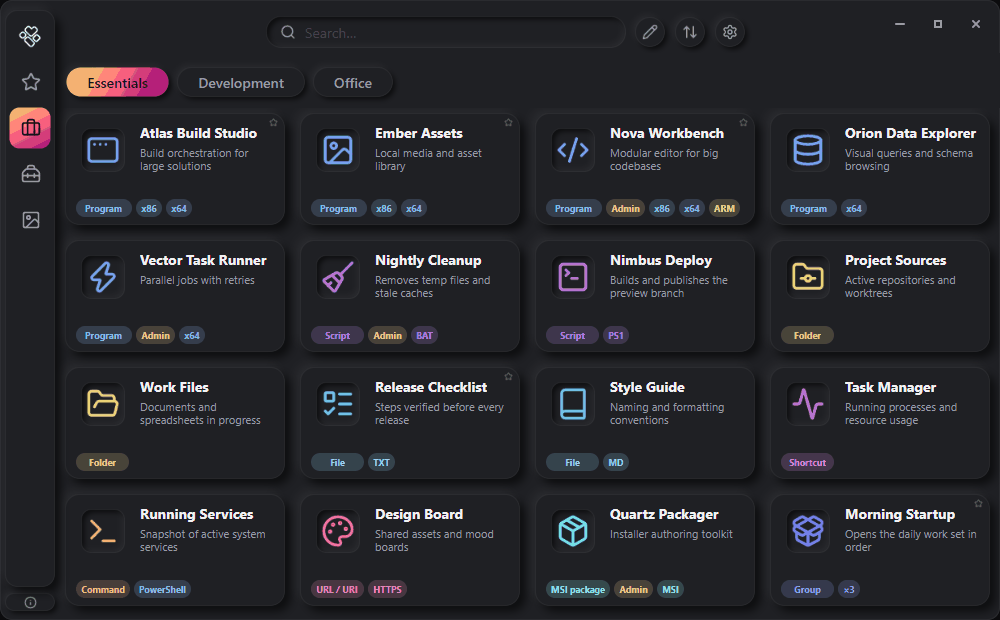

Errant Launcher
Всё нужное. В одном месте.
Программы, файлы, скрипты и ссылки — в карточках, собранных в вашем личном пространстве. Быстрый запуск, удобная организация и свобода работать на разных компьютерах.

О программе
Errant Launcher — портативная панель запуска для Windows, которая хранит настройки и данные рядом с исполняемым файлом. Программа не требует установки: её можно перенести на USB-накопителе или в другую папку и использовать на другом компьютере.
Организуйте инструменты по разделам и категориям, объединяйте задачи в группы, используйте поиск и настраивайте внешний вид под себя. Ваше рабочее пространство остаётся под вашим контролем — без необходимости устанавливать программу.
Возможности Errant Launcher
Всё под рукой
программы, файлы, папки, скрипты и ссылки в виде карточек в одном окне.
Порядок в инструментах
разделы, категории, избранное и поиск помогают быстро находить нужное.
Запуск по сценарию
объединяйте карточки в группы и запускайте несколько инструментов последовательно.
Под свой стиль
15 тем оформления, акцентные цвета и разные стили иконок карточек.
Переносимость
программа не требует установки, а данные хранятся рядом с исполняемым файлом.
Быстрое добавление
перетаскивание файлов и массовый импорт помогают быстрее наполнить свою коллекцию.
Как начать
- Скопируйте
ErrantLauncher-x64.exeв любую папку — подойдёт и USB-накопитель. - Запустите файл. При первом запуске рядом появится папка
ErrantLauncher— в ней хранятся все ваши данные. - Откройте Редактор на панели инструментов и добавьте первые карточки — или просто перетащите файлы в окно программы.
Подробная инструкция: Руководство пользователя.
Документация
Готовы навести порядок?
Соберите программы, файлы и инструменты в одном удобном месте.
Скачать Errant Launcher